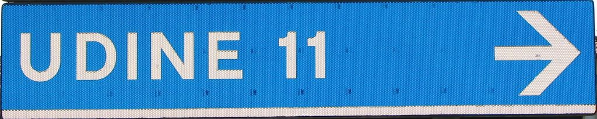
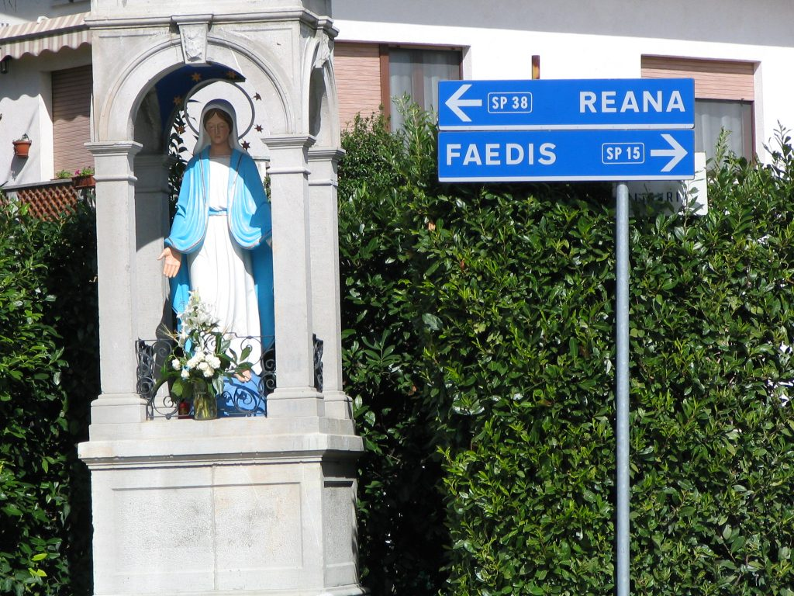
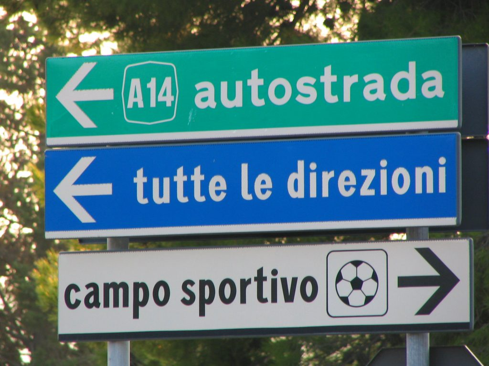
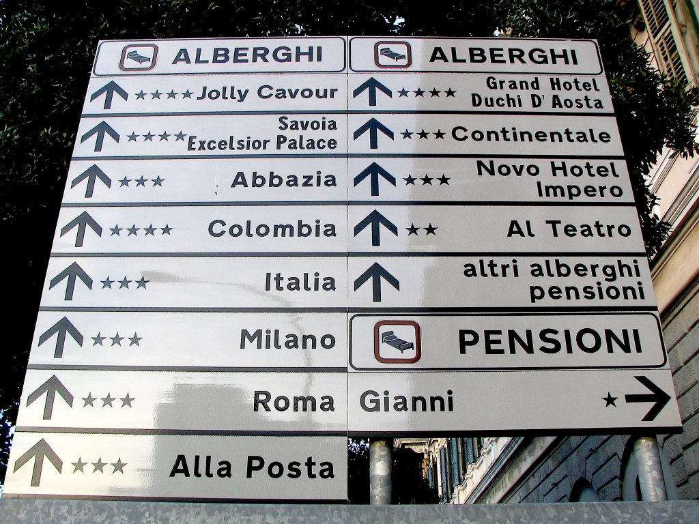
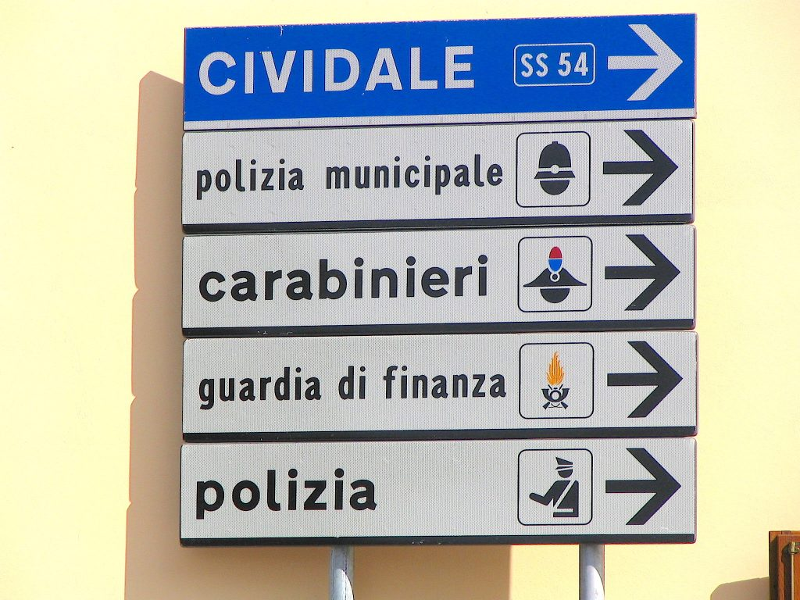
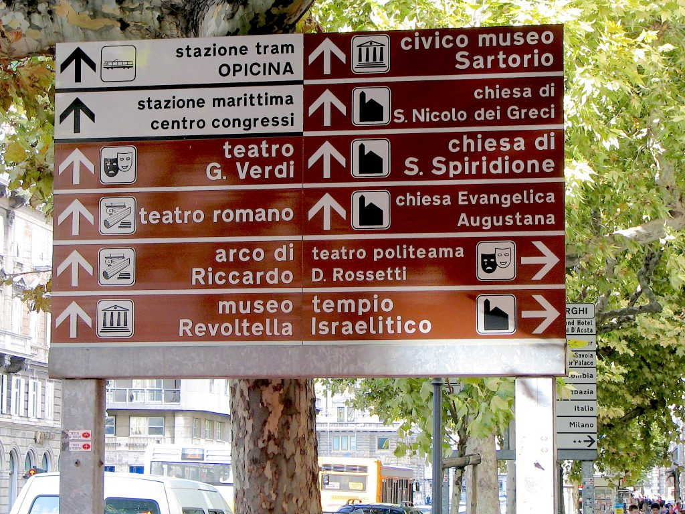
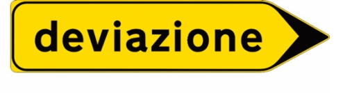

Sign to the City of Udine, 11 Kilometers

Strada Provinciale (SP) sign to the towns of Reana (road number 38) and Faedis (road number 15)
A green background is used for highway directions (tutte le direzioni means "all directions," that is to say that you need to take that direction to reach the main towns and cities in the area).
All directions sign (tutte le direzioni)
White signs are for hotel directions but also for public service places (such as police, hospitals, train stations, etc.). In this case a little icon accompanies the words to make the meaning clearer.
White hotel signs

White signs to police station
Signs with a brown (or yellow) background point the way to areas of tourist interest. Also in this case an icon will help you understand whether the place in question is a church, a museum, a theater, etc.
Brown tourist signs
Detour signs have a yellow background and black writing.
Yellow detour sign
{This is an excerpt from chapter 2 “Driving in Italy” of the eBook “Italy from the Inside. A native Italian reveals the secrets of traveling in Italy”. Buy our eBook on Amazon and leave us a review! If it’s good, you’ll make us happy, if it’s bad, you’ll make us improve. Thank you either way!}